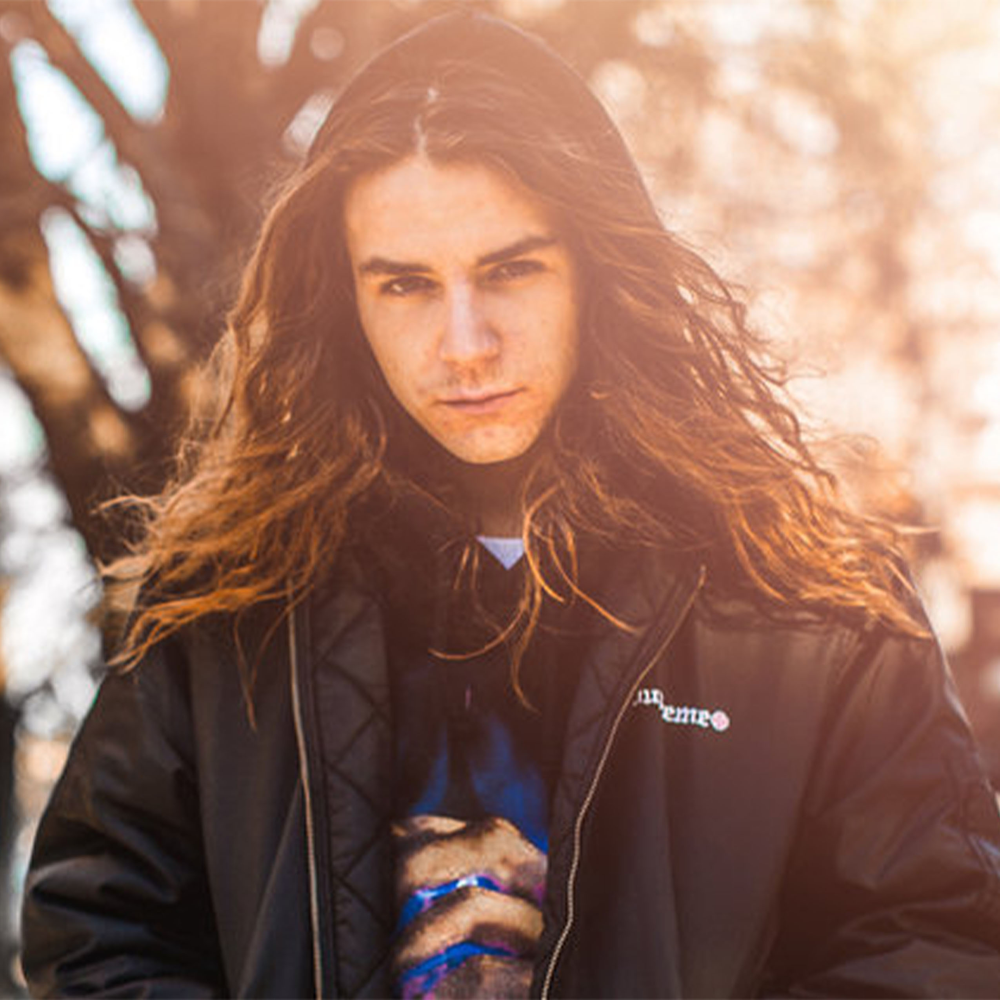

Yung Pinch Biography



Straying from the more conventional lyrical tropes of money and bravado, rapper Yung Pinch first connected with his audiences through songs with a more low-key and often nostalgic sentiment. Growing up in Huntington Beach, California, the rapper initially gained recognition with his 2016 mixtape 714Ever, a laid-back collection of songs that reflected his beachy youth in melodically sung choruses and easygoing production.
Yung Pinch grew from there, collaborating on new tracks with 03 Greedo, Mozzy, Lil Skies, and others. Yung Pinch was born Blake Sandoval in 1997 and grew up in the seaside town of Huntington Beach, California. In his teens he began publishing his tracks online, learning production with help from his friend Brandan "Matics" Maddox. The two collaborated, and eventually Sandoval was releasing singles and mixtapes like 2014's Late Nights Early Mornings. His 2016 release 714Ever was where things began taking off for the rapper, with nostalgic and hook-heavy songs like "When I Was Young" connecting with millions of listeners. He continued releasing new music in a similar vein, calling upon his beach-town upbringing and events from his early life as inspiration for his lyrics. Yung Pinch released music at a prolific rate in 2018, including the mixtape 4EVERFRIDAY SZN ONE as well as multiple singles such as "Big Checks" featuring YG, "1997," and the 03 Greedo collaboration "Wake Up."Beach Boy